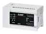
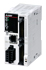
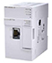
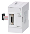
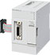
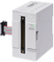
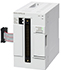
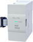

MELSEC iQ-F series Motion/Positioning Control module

- FX5 CPU module built-in output functions(Built-in positioning function)
- Motion Module (CC-Link IE TSN)
- Simple Motion Module (SSCNET III/H)
- High-speed pulse input/output module
- Positioning module
FX5 CPU module built-in output functions (Built-in positioning function)
| Model | Generic Specifications | Function | |
|---|---|---|---|
|  | FX5U CPU module | Max. 200 kHz 4 axes *Supported by transistor output type CPU module |
|
|  | FX5UC CPU module | ||
 |
FX5UJ CPU module | Max. 200 kHz 3 axes *Supported by transistor output type CPU module |
|
 |
FX5S CPU module | Max. 100 kHz 4 axes *Supported by transistor output type CPU module. |
|
- *1Only supproted by FX5U/FX5UC/FX5S.
Motion Module (CC-Link IE TSN)
| Model | Number of control axes |
Main functions/Control | Compatible CPU module | ||||
|---|---|---|---|---|---|---|---|
| FX5U | FX5UC | FX5UJ | FX5S | ||||
|  | FX5-40SSC-G | 4 axes | Function
|
*1 ○ Up to 4 modules |
*1*2 ○ Up to 4 modules |
× | × |
 |
FX5-80SSC-G | 8 axes | Function
|
*1 ○ Up to 4 modules |
*1*2 ○ Up to 4 modules |
× | × |
- *1Up to four modules of FX5-40SSC-G, FX5-80SSC-G and FX5-CCLGN-MS (master station) in total connectable per system.
Cannot be used together with FX5-SF-MU4T5 or FX5-SF-8DI4. - *2When connecting to FX5UC, FX5-CNV-IFC or FX5-C1PS-5V is required.
Simple Motion Module (SSCNET III/H)
| Model | Number of control axes | Main functions/Control | Compatible CPU module | ||||
|---|---|---|---|---|---|---|---|
| FX5U | FX5UC | FX5UJ | FX5S | ||||
|  | FX5-40SSC-S | 4 axes | Function
|
*1 ○ Up to 16 modules |
*2 ○ Up to 15 modules |
*3 ○ Up to 1 module |
× |
|  | FX5-80SSC-S | 8 axes | Function
|
*1 ○ Up to 16 modules |
*2 ○ Up to 15 modules |
*3 ○ Up to 1 module |
× |
- *1For FX5U (DC power supply type), a powered I/O module is required and up to 15 modules can be connected.
- *2When connecting to FX5UC CPU, FX5-CNV-IFC or FX5-C1PS-5V and a powered I/O module are required, up to 15 modules can be connected.
- *3FX5-40SSC-S and FX5-80SSC-S cannot be used together.
High-speed pulse input/output module
| Model | Number of control axes | Maximum frequency | Compatible CPU module | ||||
|---|---|---|---|---|---|---|---|
| FX5U | FX5UC | FX5UJ | FX5S | ||||
 |
FX5-16ET/ES-H | 2 axes | 200 kpps | *1 ○ Up to 4 modules |
*1 *2 ○ Up to 4 modules |
*1 ○ Up to 4 modules |
× |
| FX5-16ET/ESS-H | |||||||
- *1Supported in version 1.030 or later.
- *2When connecting to FX5UC, FX5-CNV-IFC or FX5-C1PS-5V is required.
Positioning module
| Model | Number of control axes | Maximum frequency | Compatible CPU module | ||||
|---|---|---|---|---|---|---|---|
| FX5U | FX5UC | FX5UJ | FX5S | ||||
|  | FX5-20PG-P | 2 axes | 200 kpps | ○ | *1 ○ |
○ | × |
|  | FX5-20PG-D | 2 axes | 5 Mpps | ○ | *1 ○ |
○ | × |
|  | FX3U-1PG | 1 axis | 200 kpps | *2 ○ Max. 6 to 8 modules *3 |
*2 ○ Max. 6 modules |
× | × |
- *1FX5-CNV-IFC or FX5-C1PS-5V is necessary to connect to the FX5UC CPU module.
- *2When connecting to FX5U or FX5UC, FX5-CNV-BUS or FX5-CNV-BUSC is required. Select one according to the system configuration.
- *3When FX3U-1PSU-5V is used, Max. is 8 modules. When FX3U-1PSU-5V is not used, Max. is 6 modules.